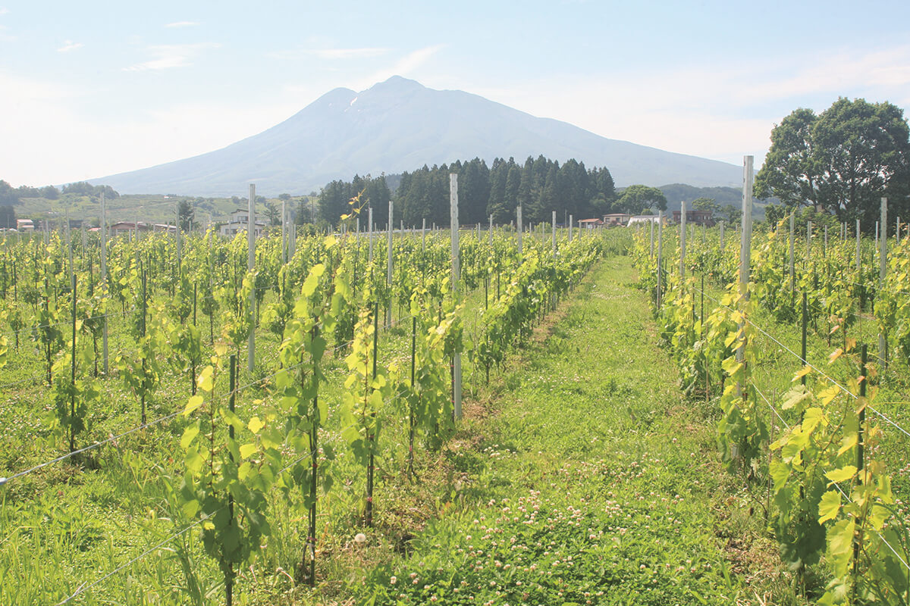
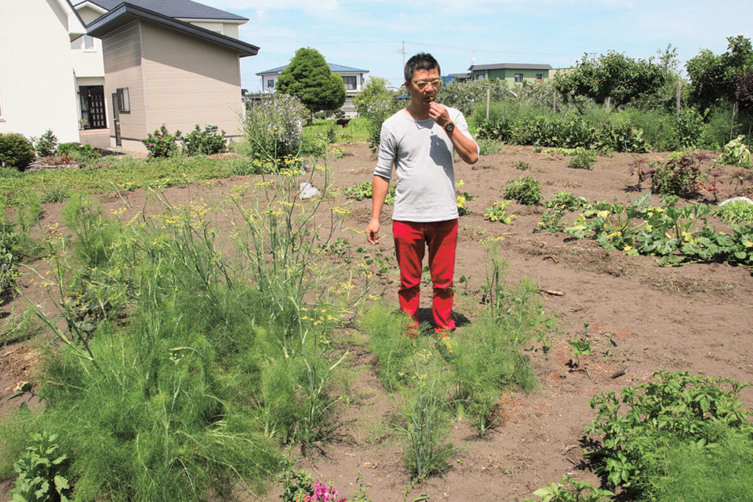
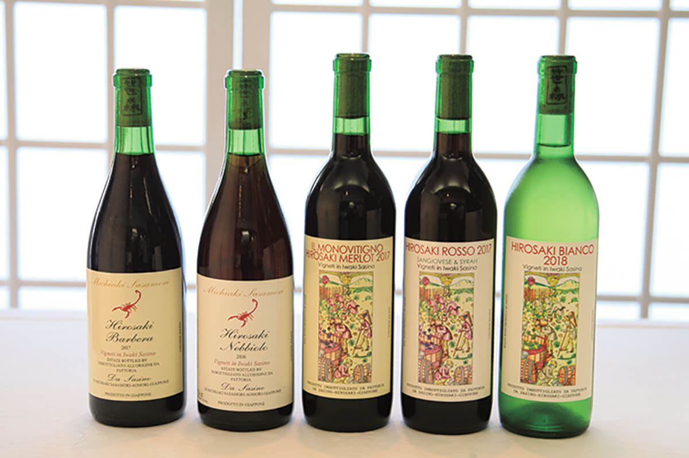
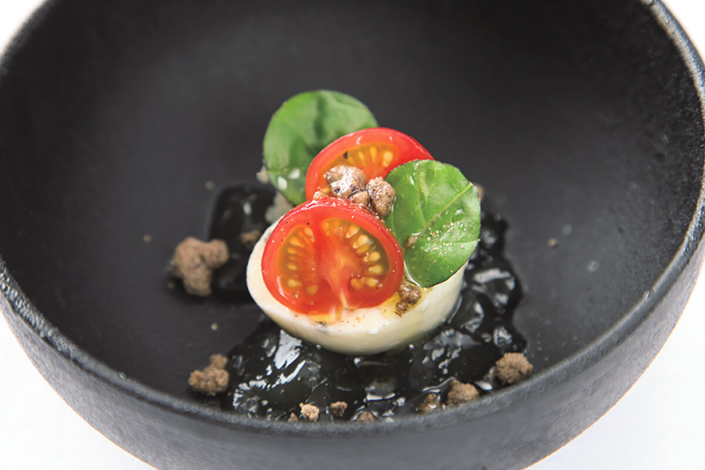
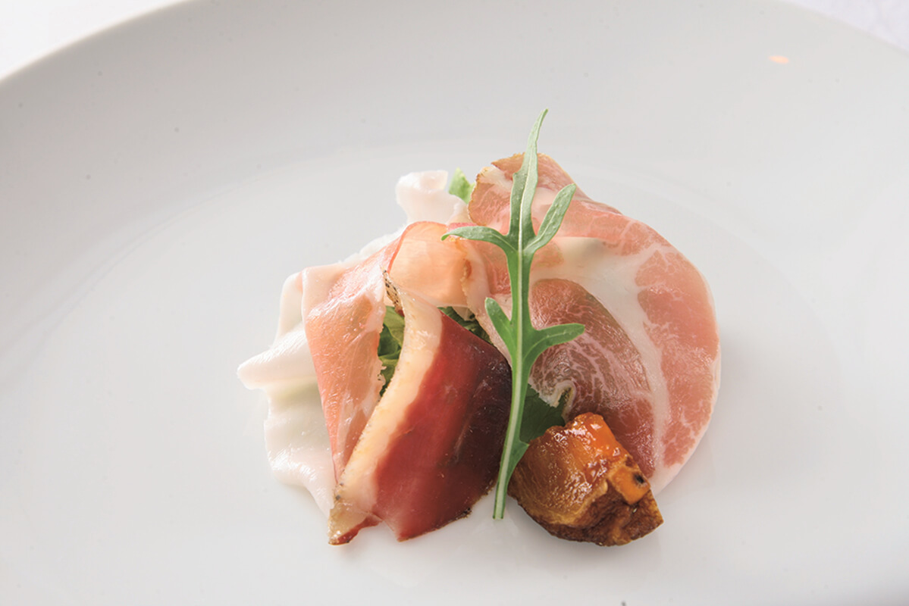
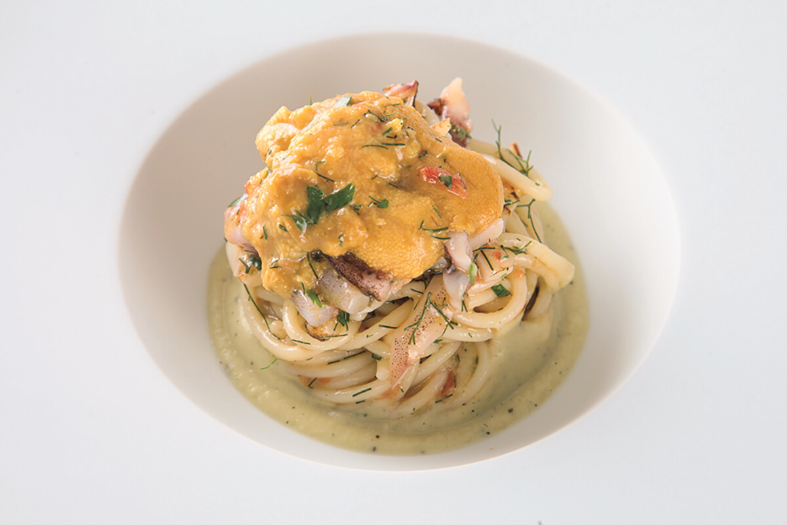
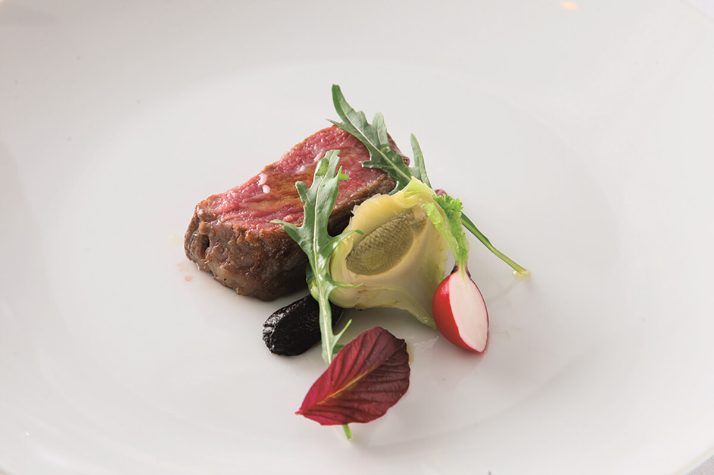

Префектура Аомори · Хиросаки · еда
Osteria Enoteca Da Sasino: итальянский ресторан в Хиросаки, который растёт из собственных полей

В Хиросаки, городе на западе префектуры Аомори, работает итальянский ресторан, который хочет сам обеспечивать себя всем: от овощей и сыра до вина. Его повар уехал учиться готовить и вернулся с твёрдым решением открыть своё дело только дома.
Идея
Сто процентов своего

Кто бывал в загородных ресторанах за границей, знает, чем там гордятся повара. Не кухней, а огородом вокруг ресторана: овощи и травы на сегодняшний ужин шеф сам срывает с грядки. Блюдо начинается с того, что вспахали землю и посеяли семена.
За границей так делают многие, а в Японии почти никто. Японские повара объясняют это просто: ресторан держится только в большом городе, где много людей, а там нет места для огорода. И даже если бы оно нашлось, у кухни не хватит ни времени, ни рук, чтобы одновременно работать в поле и у плиты.

Однако к 2020 году интерес к провинции и местным продуктам в Японии заметно вырос, и самый заметный пример такого ресторана находится в Хиросаки. Osteria Enoteca Da Sasino ставит перед собой цель обеспечивать себя продуктами на все сто процентов.
Его владелец и шеф Митиаки Сасамори принял главное решение, когда уехал из Хиросаки учиться поварскому делу.
«Только уехав, я понял: и овощи, и вода в Хиросаки вкуснее. Если открывать свой ресторан, то только здесь»
Митиаки Сасамори, владелец и шеф
Именно поэтому в Италии он учился делать сыр и вино. В 2003 году, как и обещал себе, он открыл в центре Хиросаки ресторан, который живёт своими продуктами.
Хозяйство
Вино, сыр и ветчина

К 2020 году у шефа Сасамори в Хиросаки были ресторан (с 2003 года), пиццерия и винодельня (обе с 2010 года) и сыроварня (с 2012 года). Вокруг его дома разбит огород, а чуть дальше лежит виноградник, купленный в 2019 году.
«Новый виноградник в пять раз больше прежнего, поэтому мы взяли людей, которые занимаются только вином. Будем делать вино, которое удивит весь мир!»
Митиаки Сасамори
В 2010 году шеф подал заявку на особую зону домашнего вина и получил её. Для такой зоны нет нижней границы объёма производства, и из неббиоло, который он пробовал выращивать с 2005 года, получилось элегантное красное вино. Дальше он хочет, чтобы Хиросаки и вся Аомори стали новым краем красного вина.

Начинал шеф Сасамори вообще с сыра и сыровяленой ветчины. Обычно повар покупает их готовыми у производителя, а он стал делать сам, с самого сырья. Зачем такие хлопоты? Чтобы сохранить тот баланс вкуса, который он считает правильным.
«Итальянская ветчина для японцев слишком солёная. Хотелось ветчины с меньшим количеством соли, а для этого оставалось только делать её самому»
Митиаки Сасамори

С сыром та же история: итальянский рассчитан на долгое хранение и поэтому солоноват. Всё началось с того, что в округе было вкусное молоко, и шефу захотелось найти ему применение. Буррате, которая хороша только свежей, он придаёт аромат трюфеля и делает её небольшой.
Во влажной Японии вялить ветчину и выдерживать сыр непросто, но после долгих проб получилось высокое качество. Сыры ресторана в 2014 году взяли серебро и золото на конкурсе Japan Cheese Award, а в 2015 году бронзу на международном конкурсе сыров, и сырная культура префектуры Аомори сразу шагнула вперёд.
Планы
Ресторан среди виноградников

Ресторан называют примером успеха в провинции, но доволен ли этим сам шеф?
«На самом деле доля своих овощей у нас уменьшилась. Это потому, что выросли молодые фермеры, которым можно это доверить. Зато мы больше сил отдаём тому, что можем сделать только мы: вину и сидру»
Митиаки Сасамори
А что дальше? Хозяйство разбросано по пяти местам, и шеф хочет собрать его в одно, возле виноградника. А потом поставить столы прямо среди лоз и открыть там ресторан. Это и есть настоящая итальянская жизнь.
Кроме ресторана шеф ведёт «Проект Итадакимасу», чтобы дети на своём опыте узнали, как важна еда. Оживить весь край и при этом воплотить собственный идеал: «мир Сасино» продолжает расти.
Osteria Enoteca Da Sasino
- Адрес
- префектура Аомори, Хиросаки, Хонтё, 56-8, здание «Грейс Хонтё», 2-й этаж
- Телефон
- +81 172-33-8299
- Часы работы
- 18:00–21:00 (последний заказ)
- Выходные
- воскресенье
- Цены / Вход
- 12 000 иен без налога и сервисного сбора, только по предварительной записи
- Сайт
- dasasino.com
Фото: Мунэаки Маэда.